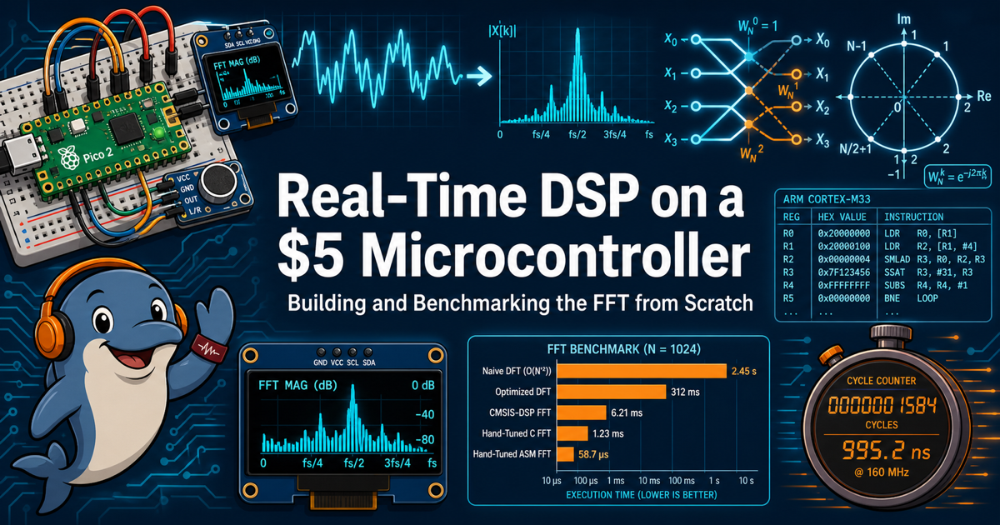

Real-Time DSP on a $5 Microcontroller
Building and Benchmarking the FFT from Scratch

Hi, I'm Echo — let's transform some signals!
 Echolocation is real-time signal processing with flippers, so trust me on this one:
what you're about to build is a genuine superpower. Time to transform!
Echolocation is real-time signal processing with flippers, so trust me on this one:
what you're about to build is a genuine superpower. Time to transform!
Our goal is to squeeze the maximum performance out of the FFT on low-cost microcontrollers — chips like the Raspberry Pi Pico 2, with its updated hardware floating point and DSP instructions. Most FFT libraries still don't use that power. By the end of this book, yours will.
We hand-wrote our FFT in ARM assembly — and it shows
This isn't a course about calling a library. You build a Discrete Fourier Transform from correlation, watch it choke at 21 seconds for a single 512-point transform, then rebuild it as a proper Fast Fourier Transform, and finally rewrite the butterfly by hand in ARM Cortex-M33 assembly — talking directly to the chip's floating-point unit and DSP instructions.
The payoff is a real number you measure yourself, on your own board:
| Implementation | Time per 512-point FFT | vs. 40 ms real-time budget |
|---|---|---|
| Brute-force DFT | ~21,000 ms | 530x over budget |
| Pure-Python FFT | 140 ms | 3.5x over budget |
| Hand-written assembly FFT | 0.85 ms | 2.1% of budget |
| Best optimized variant | 0.622 ms | 1.5% of budget |
That's a 35,000x speedup from first working code to final assembly, and the assembly version alone runs 165x faster than its pure-Python counterpart — while agreeing with it bit for bit. Every millisecond above was clocked with the chip's own cycle counter, not taken from a spec sheet.
Fun labs on a $20 kit
Everything here runs on hardware you can buy for about $19 and solder-free wire onto a breadboard in an afternoon:
| Component | Approx. cost | Purpose |
|---|---|---|
| Raspberry Pi Pico 2 (RP2350) | $5 | Cortex-M33 core, 150 MHz, hardware FPU |
| SSD1306 OLED, 128x64, SPI | $5 to $17 | Live spectrum display on a bright screen |
| Two momentary push buttons | $1 | Mode switching or changing parameters |
| INMP441 I2S MEMS microphone | $3 | Real audio capture |
| Breadboard and jumper wires | $2 | Building kit and making connections |
That kit carries you through 35 hands-on labs, and they're built to be genuinely fun, not just correct:
- Whistle at your own spectrum analyzer and watch the peak follow your pitch in real time.
- Build a chromatic tuner accurate to 1.3 Hz — then tune an actual instrument with it.
- Break things on purpose. Two labs are engineered "productive failures": you'll play a tone above the Nyquist limit and watch your instrument confidently report the wrong frequency, then clip audio and watch harmonics appear that were never in the room.
- Hand-encode a raw ARM instruction the assembler itself refuses to write.
- Race eight competing FFT variants against each other and explain, from your own measurements, exactly where every factor of speedup came from.
No compiler, no build system, no SDK — every lab runs on stock MicroPython through Thonny, and you need zero prior experience with FFTs, DSP, or assembly language to start Lab 1.
The book at a glance
| Metric | Value | What it means |
|---|---|---|
| Chapters | 27 | Major content divisions, from your first correlation-based DFT to hand-written ARM assembly. |
| Hands-on labs | 35 | Step-by-step exercises you run yourself on the $19 hardware kit. |
| Interactive MicroSims | 61 | Browser-based simulations for exploring butterflies, twiddle factors, aliasing, and more. |
| Concepts | 574 | Individual ideas tracked in the learning graph, each linked to the concepts it depends on. |
| Glossary terms | 550 | Precise, one-sentence definitions for every technical term used in the book. |
| FAQ answers | 91 | Quick answers to common student questions, cross-linked to the chapter that covers them. |
| Diagrams | 59 | Figures illustrating signal-processing concepts, from block diagrams to spectral plots. |
| Equations | 147 | Worked formulas, from the DFT sum to fixed-point scaling factors. |
| Words | 234,394 | Roughly 982 print-equivalent pages of running text. |
| Internal links | 1,017 | Cross-references tying chapters, labs, sims, glossary, and FAQ together. |
| Course length | 10 weeks | Sized for a standard academic term, but every lab works fine self-paced. |
Who this book is for
College juniors and seniors curious about signal processing — no prior FFT, DSP, or assembly background required. If you can write a loop and a function, and you're willing to plug a few wires into a breadboard, you're ready.
How to use this book
- Course Description — full syllabus, learning outcomes, and the hardware kit in detail
- Chapters — the concepts, explained from first principles
- Hands-On Labs — all 35 labs, ready to run on your kit
- MicroSims — interactive simulations for butterflies, twiddle factors, aliasing, and more
- Learning Graph — how every concept connects to the next
- Glossary and FAQ — quick answers while you work
- Instructor's Guide — for anyone teaching this course
Getting started
Start with Lab 1: Hello World with Thonny — or read Chapter 1 first if you'd rather understand before you solder. Either way, in about ten weeks you'll have a hand-written assembly FFT running in real time on a $5 chip, and the benchmarks to prove it.